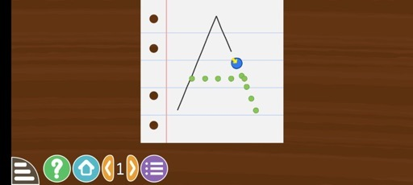
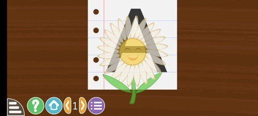

Lesson 1 - Steps vi and vii
(vi) Hold and use the arrow key on the screen to trace the letter.

(vii) Congratulations on completing level 1.

Note: Move to the next letter after completing the previous letter.
(vi) Hold and use the arrow key on the screen to trace the letter.

(vii) Congratulations on completing level 1.

Note: Move to the next letter after completing the previous letter.